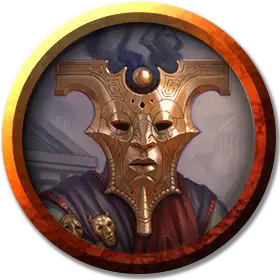

Вернувшийся-страж
Returned Sentry
Средняя Нежить, законно-злая

Класс Доспеха 15 (кожаный доспех, щит)
Хиты 22 (4к8 + 4)
Скорость 30 футов
| мод | спас | ||
|---|---|---|---|
| СИЛ | 16 | +3 | +3 |
| ЛОВ | 15 | +2 | +2 |
| ТЕЛ | 12 | +1 | +1 |
| мод | спас | ||
|---|---|---|---|
| ИНТ | 10 | +0 | +0 |
| МДР | 12 | +1 | +1 |
| ХАР | 11 | +0 | +0 |
Сопротивление урону некротическая энергия
Иммунитет к урону яд
Иммунитет к состояниям отравление
Чувства пассивное Восприятие 11
Языки все, известные при жизни
Опасность 1 (200 опыта)
Бонус мастерства +2
Особенности
Тактика стаи. Вернувшийся совершает с преимуществом броски атаки по существу, если как минимум один дееспособный союзник вернувшегося находится в пределах 5 футов от этого существа.
Сопротивление изгнанию. Вернувшийся совершает с преимуществом спасброски против эффектов, изгоняющих Нежить.
Непроницаемое лицо. Вернувшийся имеет иммунитет к любому эффекту, который может ощутить его эмоции или прочитать его мысли. Проверки Мудрости (Проницательность), направленные на то, чтобы удостовериться в намерениях или искренности вернувшегося, совершаются с помехой.
Действия
Копье. . Рукопашная или дальнобойная атака оружием: +5 к попаданию, досягаемость 5 футов или дистанция 20/60 футов, одна цель. Попадание: 6 (1к6 + 3) колющего урона или 7 (1к8 + 3) колющего урона, если используется двумя руками для рукопашной атаки, плюс 7 (2к6) урона ядом.
Праща. . Дальнобойная атака оружием: +4 к попаданию, дистанция 30/120 футов, одна цель. Попадание: 4 (1к4 + 2) дробящего урона.
Описание
Большинством новых бесцельных вернувшихся легко манипулировать так, чтобы они служили своим более сильным собратьям. Эти вернувшиеся с навязанной им целью выполняют простые, бесхитростные задачи со средней эффективностью. Их единственное достоинство — это неутомимость, которая делает их исключительными охранниками. В некрополе это приводит к тому, что многие вернувшиеся работают стражами, хотя они также могут быть посыльными или рабочими. В случае угрозы группы этих вернувшихся отлично работают вместе, разделяя общие цели — победить врага и вернуться к выполнению поставленной задачи.
Вернувшиеся
Вернувшиеся сбежали из Подземного царства и вновь живут среди живых, но их вторая жизнь редко бывает такой, какой они ожидали, — не то чтобы они помнили, ожидали ли они чего-то вообще. В результате следования по Фенаксовой тропе вернувшийся почти полностью теряет свою идентичность, которая проявляется как отдельная сущность, известная как эйдолон. Опыт побега из Подземного царства также приводит к тому, что они теряют свои лица: они становятся гладкой поверхностью без эмоций, с пустыми глазницами и разинутыми ртами. Эти пустые лица они прячут за характерными золотыми масками.
Вернувшиеся снова входят в мир опустошёнными и безжизненными. Больше не обладая способностью формировать долговременные воспоминания, они, как правило, не могут выстраивать крепкие отношения или налаживать новую жизнь. Вместо этого большинство из них испытывает мимолётные эмоции и следует пустой рутине, а их существование сводится к театру теней без конкретного содержания или даже смысла.
Маски вернувшихся. Тот, кто победит вернувшегося, может удивиться своей удаче, обнаружив после битвы столь богатую добычу. Маска вернувшегося стоит примерно 100 зм, в зависимости от её состава и мастерства. Однако продажа такой маски — это не просто обмен на монету. Большинство жителей Тероса знают истории о вернувшихся и не хотят иметь ничего общего с такими проклятыми реликвиями или с теми, кто пытается ими торговать. Найти недобросовестного торговца, готового выкупить маску вернувшегося, довольно сложно, поскольку такие предметы — это фактически лица разумных существ. Убедить продавца купить маску вернувшегося или разобраться с последствиями такой продажи само по себе может оказаться приключением.
Природа вернувшегося. Вернувшиеся — Нежить. Им нужны вода и воздух, но не еда и сон. Они думают, говорят и даже испытывают эмоции, основанные на их новых переживаниях, но, учитывая их положение, обычно эти эмоции выражаются довольно слабо.